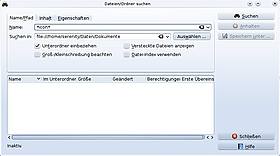
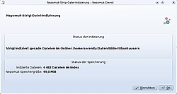
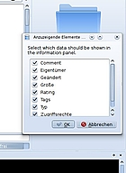
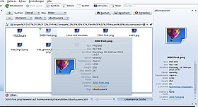

Nepomuk
Archivierte Anleitung
Dieser Artikel wurde archiviert, da er - oder Teile daraus - nur noch unter einer älteren Ubuntu-Version nutzbar ist. Diese Anleitung wird vom Wiki-Team weder auf Richtigkeit überprüft noch anderweitig gepflegt. Zusätzlich wurde der Artikel für weitere Änderungen gesperrt.
Zum Verständnis dieses Artikels sind folgende Seiten hilfreich:
Diese Seite erläutert den Nutzen, die Installation und den Einsatz von Nepomuk unter KDE. Im Speziellen werden in diesem Artikel die Suchfunktionen beschrieben. Diese machen nur einen kleinen Teil der Funktionalität Nepomuks aus. Es ist noch sehr jung und betritt in vielen Bereichen Neuland, daher lässt der derzeitige technische Stand eine andere Nutzung nicht zu, vieles wird aber in Zukunft folgen. Siehe dazu auch das Interview in den Links weiter unten.
In Kubuntu 14.04 hat Baloo  Nepomuk im Zuge der permanenten Weiterentwicklung der Suchfunktion in KDE abgelöst.
Nepomuk im Zuge der permanenten Weiterentwicklung der Suchfunktion in KDE abgelöst.
Grundlagen¶
Semantischer Desktop¶
Nepomuk ist ein Informationsframework für den semantischen Desktop. Ziele des semantischen Desktops sind, durch Anreicherung bestehender Daten mit Metadaten (Informationen die Daten genauer beschreiben), die Verwendung von Zugehörigkeiten/Verhältnissen (z.B. Sohn ist Kind von Vater und Mutter) und die einheitliche Verwaltung dieser Metadaten eine gezieltere Suche und eine verbesserte Verwaltung von Informationen zu ermöglichen. Dabei spielt es keine Rolle um welche Art (Bilder, Texte, Kontakte, …) von Informationen es sich handelt. KDE bietet ein Framework namens Nepomuk, das versucht diese Informationen zu sammeln, miteinander zu verknüpfen und einheitlich zu verwalten.
Konkrete Beispiele dieser Semantik könnten sein:
Die Bedeutung von Daten zu erfassen (z.B.: Günther Grass ist der AUTOR des BUCHES die Blechtrommel)
Beziehungen zwischen einzelnen Daten zu erkennen (z.B.: Auf dem Bild urlaub.jpg ist die PERSON Max zu sehen, Max ist ein FREUND der PERSON Klaus)
Anwendungsübergreifende Anfragen an diese Daten stellen zu können (z.B.: nach dem Inhalt von Mails nicht nur im Mailprogramm, sondern über eine einheitliche Suchmaske suchen).
Semantik in der Suche¶
Viel Zeit verbringen Benutzer mit der Suche nach bestimmten Dateien. Dafür wird unter KDE oftmals KFind benutzt. Es kann nach Namen, Größe, MIME-Typ (also Dateiart), Datum etc. suchen. Problematisch an dieser Suche ist, dass der Benutzer sehr genau wissen muss, wonach er sucht. Es müssen also möglichst viele Eigenschaften des Gesuchten bekannt sein. Dies ist nicht immer gegeben.

Ein anderer Ansatz ist es, Dateien auf dem Rechner mit Schlagworten zu versehen. Das könnte bei einem Foto z.B. die Schlagworte "Urlaub", "Teneriffa", "Tanja", "Stefan", "Strand" und "Sonnenuntergang" sein. Damit hat man den Inhalt des Bildes relativ gut beschrieben. Schlagworte (auch Tags genannt, siehe Metadaten) findet man in der Onlinewelt schon sehr oft. Sei es in Blogs, bei Flickr, diesem Wiki oder anderen Diensten. Menschen erinnern sich besser an Personen als an einen Dateinamen, unter dem das gewünschte Bild zu finden wäre. Mittels KFind wäre es sehr schwer, ein solches Bild wiederzufinden. Der Benutzer könnte den Dateityp auf jpg und das Datum auf ein Jahr eingrenzen, aber mehr ist nicht möglich.
Eine beispielhafte Suchanfrage könnte lauten: "Finde alle Bilder die an einem Strand entstanden sind und auf denen Tanja zu sehen ist."
Metadaten¶
Nepomuk hat unter KDE einen Mitarbeiter namens Strigi. Strigi ist ein Indexer und durchsucht fortwährend die Dateien des Rechners. Dabei sammelt es Metainformationen (Texte aus Dateien, Exif-Informationen in Bildern, liest die Metadaten aus MP3s aus, ...) und übergibt sie Nepomuk. Nepomuk ordnet diese Daten, die Bewertungen und Schlagworte in einer Datenbank den jeweiligen Dateien zu und wird auch beim Suchen bemüht. Diese Datenbank wird pro Benutzer im Ordner ~/.kde//share/apps/nepomuk/ angelegt
Es gibt schon viele Programme, die Verschlagwortung unterstützen. Diese Tags liegen aber nur im jeweiligen Programm vor und können nicht von außen benutzt werden. Nepomuk hingegen sorgt dafür, das diese Informationen systemweit vorliegen und alle Programme die gleiche Basis haben. So liegen Tags, die mittels digiKam vergeben wurden, auch in der Informationsleiste von Dolphin vor. Andersherum funktioniert dies natürlich auch. Es spielt also für Nepomuk keine Rolle, ob diese Daten manuell hinzugefügt wurden oder durch Strigi bzw. andere Programme.
Manuelles Taggen von Dateien ist ein riesiger Aufwand, wenn man schon viele Dateien besitzt. Daher versucht Strigi, dieses etwas zu vereinfachen und Metadaten automatisch aus den einzelnen Dateien auszulesen.
Installation¶
Nepomuk war ein fester Bestandteil von KDE und konnte nicht separat installiert werden. In den offiziellen Paketquellen ist nach dem Wechsel zu Baloo ab Kubuntu 14.04 nur noch ein Transitpaket vorhanden.
Verwendung¶
 Um Nepomuk nutzen zu können, muss es unter "Systemeinstellungen -> Desktopsuche" in KDE aktiviert werden. Dazu setzt man einen Haken bei "Nepomuk-Semantik-Dienste aktivieren" und einen weiteren bei "Strigi-Datei-Indexer aktivieren". In den weiteren Reitern kann man festlegen, welche Orte auf dem Rechner durchsucht werden sollen und wieviel Arbeitsspeicher (RAM) Nepomuk nutzen darf. Hier kann der Standardwert belassen werden. Möchte man dies nicht, kann dieser Wert auf Kosten der Suchgeschwindigkeit reduziert werden. Nun beginnt das eigentliche Indexieren durch Strigi.
Dies kann je nach zu durchsuchenden Daten lange dauern, aber diese Grundindexierung wird nur ein einziges Mal durchgeführt. Dabei sollte man abwarten, bis alles richtig indexiert wurde und Strigi meldet "der Datei-Indexer ist ausgesetzt". Man kann diesen Vorgang immer im Systemabschnitt der Kontrollleiste nach dem Klick auf das Symbol “Suchdienst” beobachten. Werden neue Dateien in einem der vorher angegebenen Ordner hinzugefügt, so findet sie Strigi sie beim nächsten Mal automatisch.
Metadaten anlegen¶
 Nachdem Strigi alle verfügbaren Metadaten ausgewertet und in Nepomuk geschrieben wurden, hat der Benutzer die Möglichkeit, eigene Metadaten zu erstellen. In der Seitenleiste "Informationen" des Dateimanagers Dolphin kann man Bewertungen (0-5 Sterne), Schlagwörter und Kommentare für eine Datei anlegen.
Werden nicht alle oder zu viele Informationen dort angezeigt, so lässt sich dies für jede Dateiart (Text, Ordner, Bilder, Musik) einzeln anpassen. Durch einen Rechtsklick in die rechte Infoleiste kann man die Informationen auswählen, die angezeigt werden sollen.
Sollen die angezeigten Informationen für Bilder geändert werden, so klickt man auf ein Bild und macht anschließend einen Rechtsklick auf den rechten Infobereich. Dies kann für jede Art von Daten (Bilder, Texte, Musik, ...) einzeln festgelegt werden. Einmal vergebene Schlagwörter werden gespeichert und können danach durch Auswahl auch auf andere Dateien angewandt werden. Die Idee hinter Schlagwörtern ist es also, verschiedene Dateien unter einem Thema zu gruppieren. Im Gegensatz zu den Schlagwörtern werden Kommentare exklusiv für eine Datei vergeben.
Suchen mit Nepomuk¶
Der Dateimanager Dolphin bietet zwei Möglichkeiten der Suche an:
Möchte man über alle Kommentare, Schlagworte, Bewertungen und Orte suchen ohne genauer zu spezifizieren, so genügt es, den Suchbegriff in das Suchfeld oben rechts einzugeben und die Suche mittels ⏎ zu starten.

Möchte man hingegen beispielsweise nach Bildern suchen, die mit einem bestimmten Begriff verschlagwortet wurden, so öffnet man Dolphin, klickt in die Suchleiste oben rechts und über den Dateien erscheint eine weitere Suchleiste. Diese fragt, an welchem Ort gesucht werden soll und das gewünschte Medium. Durch einen Klick auf das grüne Pluszeichen können weitere Kriterien angeben werden. Nebenstehendes Fenster zeigt eine beispielhafte Suche nach Bildern mit dem Stichwort "Ubuntuusers".
Als Ergebnis erscheinen alle Bilder, die den Kriterien entsprechen. Eine Datei bzw. ein Ordner ist Ergebnis einer Suche, wenn der Suchbegriff:
Teil des Datei- oder Ordnernamens ist,
Teil des Kommentars ist,
bei Textdokumenten im Dateiinhalt vorkommt,
oder Teil von typspezifischen Metadaten ist (z.B. Interpret oder Genre bei einer MP3-Datei).
Virtuelle Ordner¶
Virtuelle Ordner sind im Prinzip gespeicherte Suchanfragen. Klickt man auf solch einen Ordner, beginnt Nepomuk im Hintergrund mit der Suche und präsentiert als Ergebnis die Treffer, die einer Suchanfrage entsprechen. Hat der Benutzer beispielsweise eine Suche nach "Bilder mit dem Schlagwort Tanja" als virtuellen Ordner gespeichert, so erscheinen diese Bilder. Werden in Zukunft weitere Bilder mit "Tanja" gekennzeichnet, so erscheinen auch diese neu indexierten Dateien im virtuellen Ordner.
Um einen virtuellen Ordner anzulegen, muss einmalig eine Suche nach obigen Muster durchgeführt werden. Anschließend speichert man diese Suche mittels der Schaltfläche "Speichern" ab und gibt dieser einen Namen. In der linken Lesezeichenliste sieht man dann ein Lesezeichen mit entsprechendem Namen dazu. Es handelt sich also um ein dynamisches Lesezeichen verbunden mit einer Suche.
Problembehebung¶
Strigi beginnt die Indexierung immer wieder von vorne¶
Es kann vorkommen, dass Strigi bei der Indizierung einer Datei stoppt. Symptome sind eine hohe CPU-Last, die durch die Dienste nepomukservices oder virtuoso-t verursacht wird. Dieses Verhalten ist oftmals bei MP3-Dateien zu beobachten. Klickt man auf das Symbol "Suchdienst" bzw. "Desktopsuche" im "Systemabschnitt der Kontrollleiste -> Status der Indizierung", so sieht man, das Strigi indexiert, aber ab einem bestimmten Ordner oder einer Datei wieder von vorne beginnt. Ist dies der Fall, so kann man den besagten Order von der Indexierung ausnehmen. Dazu klickt man auf "Einrichten -> Datei-Indizierung" und entfernt den Haken bei dem Ordner, in dem der Ordner/Datei liegt. Wer genau wissen will, um welche Datei es sich handelt, installiert das Paket strigi-utils und führt in der Konsole den Befehl
xmlindexer DATEINAME
aus. DATEINAME wird dabei durch die verdächtige Datei ersetzt. Sollte man nach einiger Zeit nicht wieder am Prompt landen, hat sich der Verdacht bestätigt. Setzt man ein aktuelles Strigi ein, sollte man den Bug dem Projekt melden und dabei die problematische Datei mit hochladen.
Bewertungen und Schlagworte aus DigiKam werden nicht in Nepomuk übernommen¶
Die Tags aus digiKam werden nicht automatisch in Nepomuk exportiert. Dazu muss man in Digikam erst unter "Einstellungen -> digiKam einrichten -> Metadaten -> Nepomuk" die Option "Metadaten aus digiKam in Nepomuk speichern" aktivieren. Der Klick auf die Schaltfläche "fully resyncronize now" gleicht einmalig in Richtung Nepomuk ab. Danach passiert dies automatisch, wenn neue Bilder getaggt werden.

 Übersichtsartikel
Übersichtsartikel- Erstellt mit Inyoka
-
 2004 – 2017 ubuntuusers.de • Einige Rechte vorbehalten
2004 – 2017 ubuntuusers.de • Einige Rechte vorbehalten
Lizenz • Kontakt • Datenschutz • Impressum • Serverstatus -
Serverhousing gespendet von